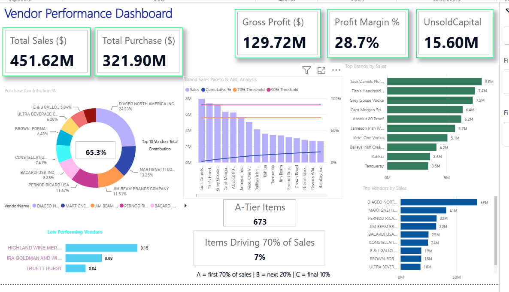
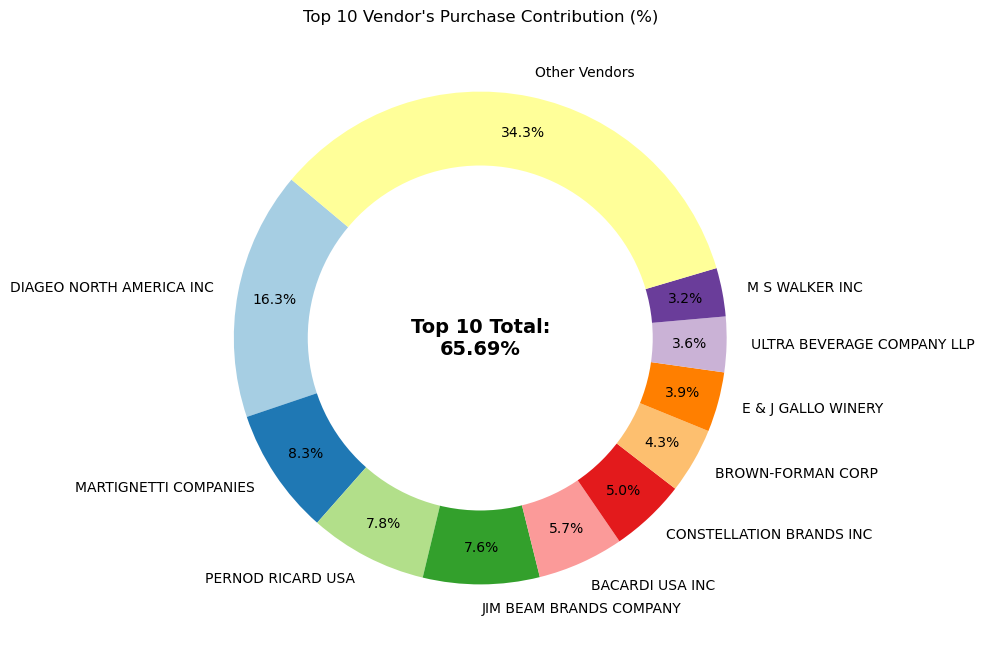
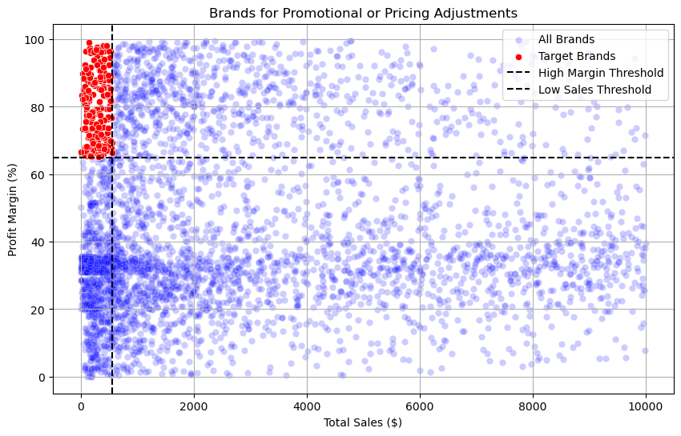
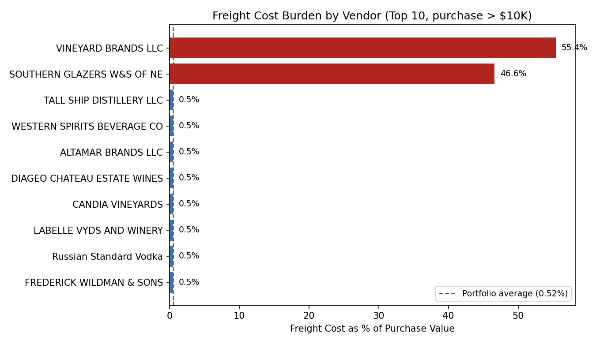
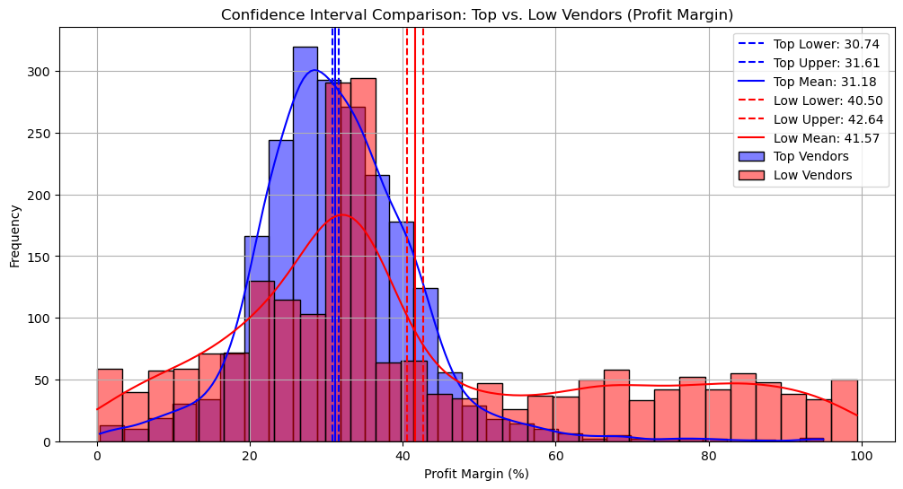
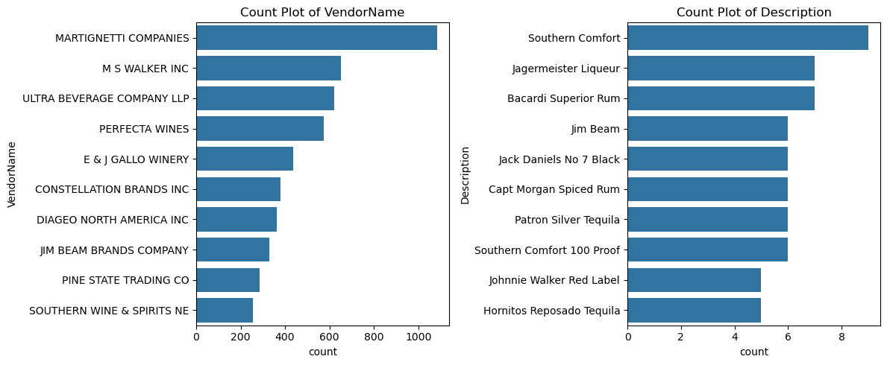

VENDOR PERFORMANCE ANALYSIS
An end-to-end procurement analytics project using SQL, Python, statistics and Power BI to evaluate vendor, product, profitability and inventory performance.

PROJECT OVERVIEW
This project analyzes vendor performance using procurement, sales, profitability, inventory and freight cost data to identify key business insights and opportunities for improvement.
KEY ANALYSIS
The analysis includes vendor contribution, sales concentration, profitability, inventory performance, promotional opportunities, freight cost burden and statistical comparison of vendor groups.
TOOLS & TECHNOLOGIES
SQL | Python | Pandas | Statistics | Power BI
DASHBOARD OVERVIEW
The Power BI dashboard provides an interactive overview of sales, purchases, gross profit, profit margin, unsold inventory and vendor contribution.
KEY ANALYSIS VISUALIZATIONS





PROJECT REPOSITORY
The complete project, including analysis and supporting files, is available on GitHub.